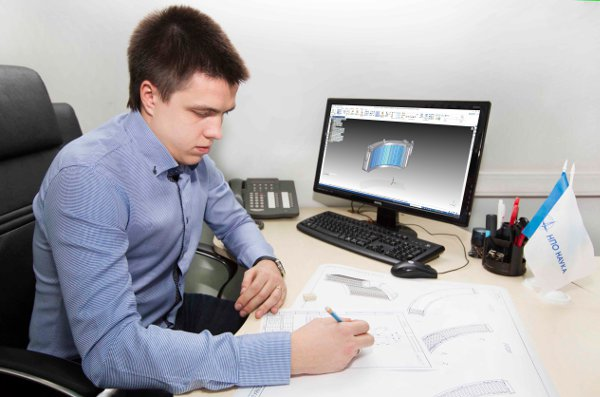

О КОМПАНИИ
Научно-производственное объединение «Наука» — лидер в области
создания систем и агрегатов кондиционирования, жизнеобеспечения,
систем автоматического регулирования давления для авиационно-космической
техники в России, а также для международных программ.
Предприятие было образовано в 1931 году. В истории НПО «Наука» отражен
весь путь развития отечественной авиации и космоса. На протяжении многих
лет объединение является одним из ключевых разработчиков и производителей
авиационных систем и агрегатов, предлагая заказчикам современные технологии
и инновационные решения.
В компании работают высококвалифицированные специалисты, имеющие практический
опыт работы в областях тепломассообмена, газодинамики, физико-химических
процессов, механики, пневмо- и электроавтоматики, технологии и производства.
НПО «Наука» разработало, изготовило, испытало и ввело в эксплуатацию более 7000
наименований систем и агрегатов. Общее количество изделий, находящихся в
эксплуатации, превышает 250 тыс. единиц.

Мы предоставляем поддержку нашей продукции на всем протяжении жизненного цикла,
обеспечивая конечным потребителям условия для достижения наилучших экономических
и эксплуатационных показателей.
Структура НПО «Наука» предусматривает непрерывный творческий процесс разработки,
изготовления экспериментальных образцов, проведения сертификационных испытаний и
серийное производство систем агрегатов по заказам отечественных и зарубежных партнеров.
Системами и изделиями «Науки» оборудована практически вся российская авиационная техника.
Компания имеет сертификаты, подтверждающие соответствие системы менеджмента
качества применительно к деятельности по АТ и ВВТ.
НПО «Наука» аккредитовано в национальной системе аккредитации в области обеспечения
единства измерений для выполнения работ и оказания услуг по поверке средств измерений:
КЛЮЧЕВАЯ ФИГУРА
Меркулов Евгений Владиславович
Председатель совета директоров ОАО Научно-производственное объединение
"Наука" (г. Москва) с сентября 2002 г.; родился в 1965 г. в г. Обнинск
Калужской области; окончил Московский физико-технический институт по
специальности "автоматика и электроника" в 1989 г., Институт бизнеса
и делового администрирования Академии народного хозяйства при
правительстве РФ по специальности "стратегическое управление" в
2001 г.; 1991-1994 - генеральный директор ЗАО Торговый дом
"Комплексные системы"; 1995-1997 - начальник отдела по работе с
клиентами, начальник инвестиционного управления - заместитель
председателя правления Юстибанка; с 1996 г. - заместитель генерального
директора ЗАО "Амстел-Фэа"; одновременно являлся членом
совета директоров ОАО "НПО "Наука".
НПО "Наука" - единственный в России и странах СНГ разработчик
авиационных и космических систем жизнеобеспечения воздушных судов,
космических кораблей и орбитальных станций.